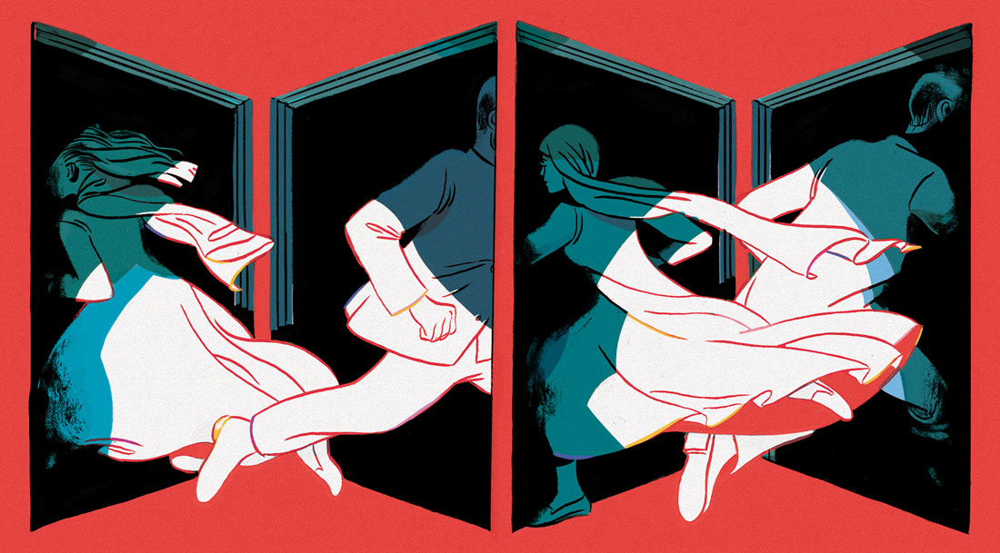
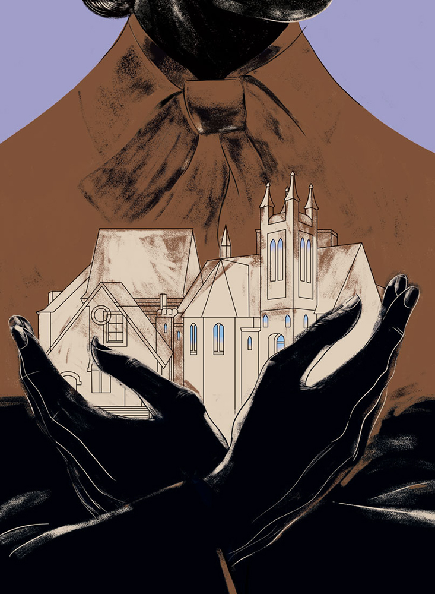
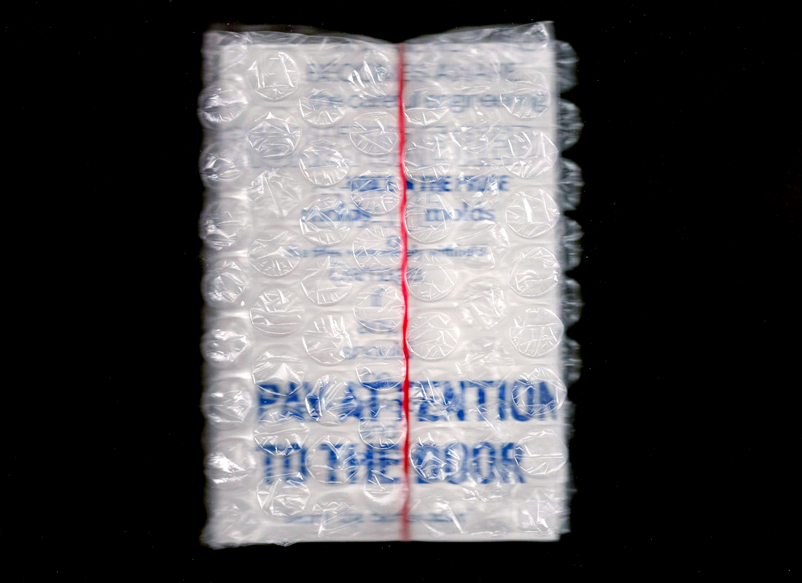

| Title | Type | Client | Year | Thumbnail | Exit West | Illustration | The New York Times Magazine | 2017 |  | Dr. Space Junk | Illustration |
The New Yorker | 2017 |  |
Type: 2015–Present | Design |
The New York Times Magazine | 2017 |  |
The Suburbs Issue | Illustration |
Lucky Peach | 2017 |  |
The Health Issue | Design, Art direction |
The New York Times Magazine | 2017 |  |
Porcelain Balloon | Illustration | Look Back and Laugh Books | 2017 |  |
Matador | Illustration | 2017 |  |
Puzzle Mania | Design, Art direction |
The New York Times | 2016 |  |
The Real | Illustration | La Petite Mort | 2016 |  |
Various, for The New York Times Magazine | Design | The New York Times Magazine | 2015—17 |  |
|---|---|---|---|---|
| The Education Issue: High School, U.S.A. | Design, Art direction |
The New York Times Magazine | 2016 |  |
| Biddy Mason | Illustration | Mary Review | 2016 |  |
| Lambs | Illustration | Mary Review | 2016 |  |
| #660033 | Writing | Websafe 2K16 | 2016 | |
| Lit | Design | Lit | 2016 |  |
| Chelsea Wolfe | Design, Illustration |
Sasquatch! Music Festival | 2016 |  |
The Money Issue: The Middle Class | Design, Art direction |
The New York Times Magazine | 2016 |  |
Dear Reader | Illustration | The New York Times Magazine | 2015—17 |  |
| Drawings | Drawing | 2015—present |  |
|
| Various, for Metahaven | Various | Various | 2015 | |
| Various, for Other Means | Various | Various | 2015 |  |
| Traces of Absent Things | Degree project | 2015 |  |
|
| The Assemblage of Parts | Writing, Design |
2015 |  | |
| Index (study) | Design | 2015 |  |
|
| On Space | Writing, Design |
2015 |  |
|
| Shakey Graves | Design | Sasquatch! Music Festival | 2015 |  |
| Interview | Writing, Design |
2015 |  |
|
| Lost Poems, Stolen Poems | Writing, Design |
2015 |  |
|
| RISD Commencement 2015 | Design | RISD Media | 2015 |  |
| Design | RISD GD Department | 2015 |  |
|
| Flight #1, #2, #5 | Drawing | 2015 |  |
|
| War | Illustration | 2015 |  |
|
| Big Questions | Design | 2014 |  |
|
| Material Play | Design | 2014 |  |
|
| 'Space' | Design | 2014 | ||
| 11:11 | Design, Drawing |
2014 | ||
| Copy Making | Writing, Design |
2014 |  |
|
| I Have So Many Memories | Design, Code |
2014 |  |
|
| 24/7 | Illustration | 2014 |  |
|
| Remember? | Illustration | 2014 |  |
|
| Oded Ezer | Design | RISD GD Department | 2013 |  |
| The Graphic Edit, for Hum | Design | The Graphic Edit | 2013 | |
| You Think Too Much | Design, Drawing |
2013 |  |
|
| Brought To You By | Drawing | 2013 |  |
|
| Baths | Design, Illustration |
Sasquatch! Music Festival | 2013 |  |
| O'erheard | Writing, Design |
2013 |  |
|
| Only Magical | Illustration | Threadless | 2013 |  |
| Modern Signs | Design | 2012 |  |
|
| Sketchbook | Drawing | 2012—present |  |